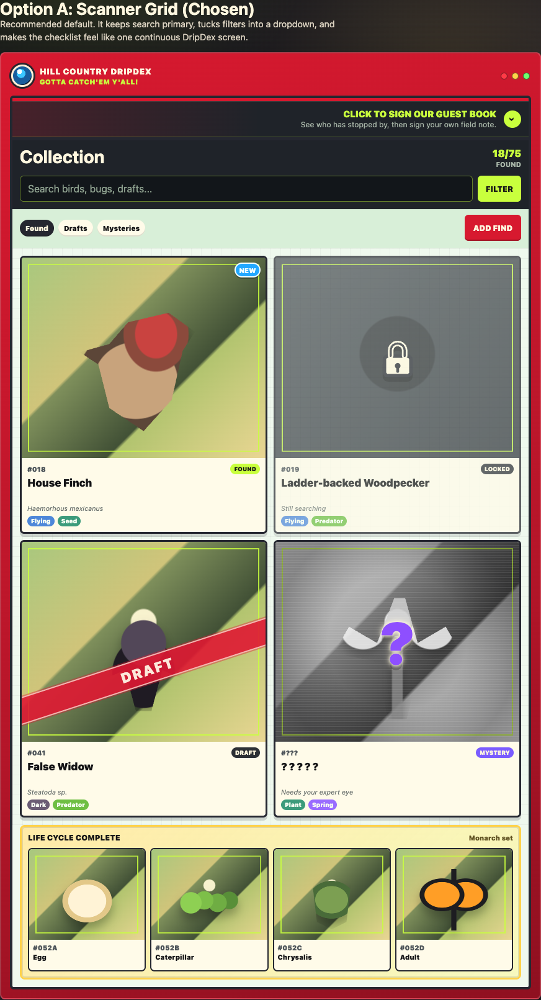
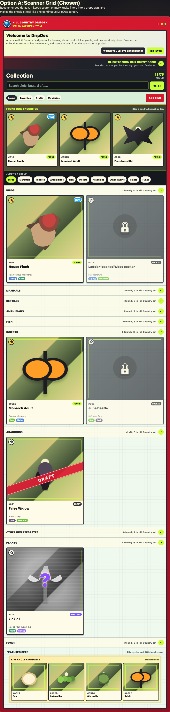
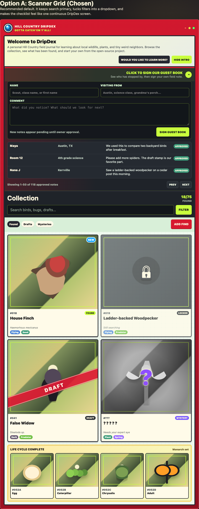
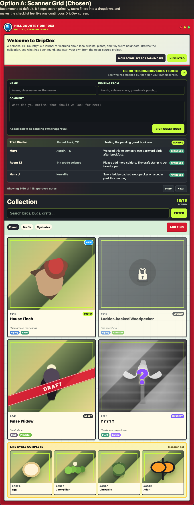

Needs review
Fixture records currently keep needsHumanValidation: true
until the owner reviews source terms, identity, and usage.
Fixture sources
DripDex preview content is fixture-backed. It should be treated as development sample data until source terms, credits, and species identity are human-reviewed.
Fixture records currently keep needsHumanValidation: true
until the owner reviews source terms, identity, and usage.
Fixture tables should include source pages, authors, license names, license links, access notes, and modification notes.
Public preview pages should use checked-in web derivatives and screenshots, not private originals or test fixtures.
Canonical source table
The source table lives in the repository so it can move with fixture changes and review updates.
Review the current fixture source notes here: docs/fixtures/README.md.
The table should track:
Do not publish
The preview site should not accidentally turn internal testing data into public sample content.
tests/fixtures/exif/. They are for parser tests only.
Preview screenshots
These are screenshots and mockups from the repository. They are useful for explaining product direction, not for making final source claims.



